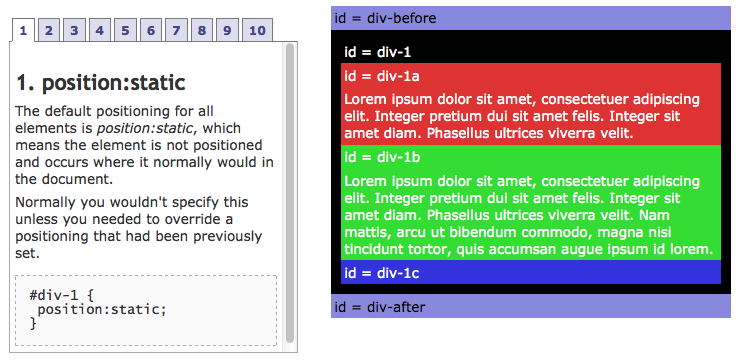
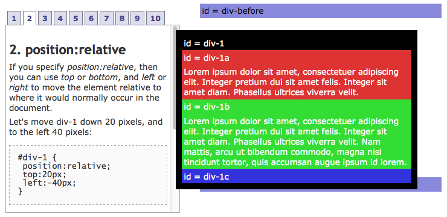
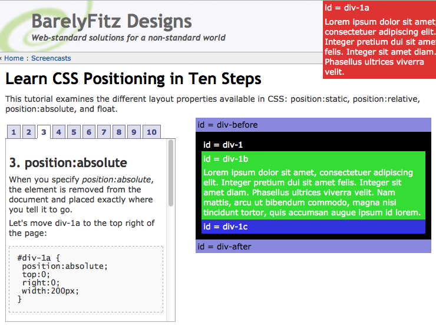
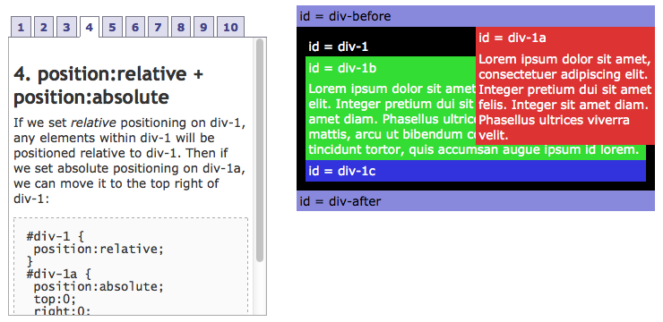
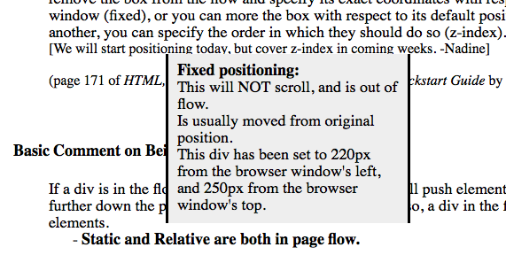

CSS: Relative, Absolute, and Fixed Positioning
As I worked through various challenges this week and last, I dealt with positioning elements with CSS. At times I felt like I was banging my head against a wall trying to get things to line up the way I want. Along the way I've picked up some clues on what's going on, but the simple research I did for this technical post has definitely produced an "aha moment" for me.
The first resource I found was from LearnWebCode on youtube. After all the reading I've done on the subject, this visual presentation really helped make things click. What helped solidify my learning came from Learn CSS Positioning in Ten Steps. This site shows simple examples of how CSS code can affect the relationships and positioning of html blocks. The first thing to keep in mind is that everything in html is a block, so you can move any of these around using position properties. I have examples from the site below, but to get the real effect please click the link above and see for yourself.
Static
Firstly, the default positioning of blocks in html is "static." In this example, the CSS code for div-1 is set to static, however it's redundant since it doesn't really change the way the blocks are displayed.
Relative
This is where my big "aha moment" came. When a block is set to relative, you can tell it how many pixels and in what direction to offset it from its parent. In this example, the div-1 block is being moved down 20 pixels and to the left 40 pixels.
Absolute
Seeing this example of absolute positioning helped my understanding greatly as well. The red box bellow, div-1a, has its position set to absolute. This means that when I position it, it won't be tied to its parent block, which in this case is the black box, div-1. In this example it has been placed 0 pixels from the top, and 0 pixels from the right. The result is that it will be stuck in the upper right corner of the browser window.
Relative + Absolute
Relative and absolute positioning can be linked together, as seen in the example below. The red block still has an absolute positioning, however now it's parent block, div-1, has been assigned to position:relative. When a parent block has this assignment, a child block with absolute positioning can't leave the bounds of the parent block. The red block is still positioned at 0 pixels from the top and 0 pixels from the right, as in the previous example.
Fixed
Lastly, there's fixed positioning. I found This Site which demonstrates it. Basically, when a block is set to fixed position, it won't scroll with the rest of the page. In this example it just sits in the same spot while the other text scrolls beneath it.